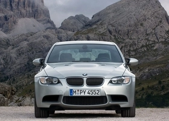

ТЕХНИЧЕСКИЕ ХАРАКТЕРИСТИКИ БМВ М (E90) SEDAN
Количество мест - 5
Количество цилиндров - 8
Объем двигателя - 4 л.
Рекомендуемое топливо - АИ-98
Максимальная мощность - 420 л.с. при 400/3900 об/мин
Длина - 4580 мм
Ширина - 2005 мм
Объем багажника - 430 л
Объем топливного бака - 63 л
Снаряженная масса - 1680 кг
Тип передней подвески - винтовая пружина
Тип задней подвески - винтовая пружина
Передние тормоза - дисковые вентилируемые
Задние тормоза - дисковые вентилируемые
Тип трансмиссии - автомат
Количество передач - 7
Максимальная скорость - 250 км/год
Разгон до 100 км/ч - 4.9 с.
Расходы на топливо, л город / трасса / смешанный - 17.9 / 9.2 / 12.4